Architecture
How VLite works
One Rust engine writes vectors and graphs to one authoritative file. Every index is a rebuildable cache. Embed the engine or run it as a server.
Key terms
| Term | What it means in VLite |
|---|---|
| Database | One .vlite file with your records, collections and graphs. Embed it, or serve it with vlite-server, one file per server. |
| Collection | A named set of records, like a table, with its own vector size and settings. Every database has default; named collections need format v4 or newer. |
| Graph | A named property graph in the same file: nodes, typed edges and links to records. |
| Tenant | A private space for one team or customer in the same file. Its users and API keys see only its collections and graphs. |
| User | A person who signs in to the dashboard as super admin, editor or viewer. Apps use API keys. |
Tenants and users exist only on a server; their settings live in its admin directory.
Layers
Every interface calls the same Database core. Only the storage layer touches the file.

Text diagram
flowchart TB
SDK["SDKs and APIs<br/>Rust · Python · Node.js · C · WASM<br/>REST · gRPC · console · MCP"]
DB["Database core<br/>collections · records · metadata<br/>vectors · graphs · queries · change feed"]
IDX["Search and indexes · rebuildable<br/>HNSW · ScalarU8 · metadata<br/>BM25 · hybrid RRF · Disk ANN"]
STORE["Storage and format<br/>checksummed frames · optional encryption<br/>file / memory backend"]
FILE[("data.vlite<br/>authoritative committed records")]
SDK -->|"same embedded API"| DB
DB -->|"query / rebuild"| IDX
DB -->|"durable commits"| STORE
STORE --> FILE
One file
The database file is the only source of committed records. It is an append-only log of checksummed frames, with no separate write-ahead log. Indexes and ANN snapshots derive from it, so losing them never loses data.

Text diagram
flowchart LR
F[("data.vlite<br/>authoritative")]
A["data.vlite.ann<br/>ANN snapshot cache"]
D["disk-ann-#lt;id#gt;.dann<br/>Disk ANN"]
M["In-memory indexes<br/>HNSW · metadata · BM25"]
F -- "rebuild on open" --> M
F -- "persist graph" --> A
F -- "build" --> D
A -. "load if identity matches" .-> M
Inside, the file is a fixed header followed by frames. Each commit appends one frame, and all integers are little-endian.
File header
Every file starts with a 32-byte header. Its CRC32 covers bytes 0–27 and is checked on every open.
- Dimensions belong to the
defaultcollection. Other collections record theirs when they are created. - Lineage is a random, nonzero file identity. ANN snapshots, Disk ANN files, change-feed cursors and scoped credentials are bound to it. Compaction, upgrade and restore give the new file a new lineage.
- ID floor carries the highest collection ID already used, so a dropped collection's ID is never reused, even after compaction.
- Bytes 16–27 are zero in v1–v3 files.
| Flag | Meaning |
|---|---|
| 1 · encrypted | Frame bodies are sealed with ChaCha20-Poly1305, and an encryption descriptor follows the header. |
| 2 · timestamps | Each commit is preceded by a time-anchor frame (op 11), so a restore can target a point in time. |
| 4 · graph | The file can hold property graphs. Set by default on new files. |
Only v5 files have flags. Unknown bits fail with UnsupportedFeature rather than being ignored, so an older binary never misreads a newer file.
Encryption descriptor (64 bytes, readable, encrypted files only):
KDF 0 is a raw 32-byte key. KDF 1 derives the key from a passphrase with Argon2id, using the stored cost. The key ID is a short fingerprint of the key, and the key check confirms the key before anything is decrypted. A wrong key returns EncryptionKeyMismatch with the expected key ID, never a corruption error.
Frames
A frame is a 36-byte prefix, a body and a 16-byte footer. The footer is the commit marker: a frame without a valid footer is never treated as committed.
Prefix (36 bytes):
- sequence rises by exactly one per commit; a time anchor shares the sequence of the commit it precedes. A gap is reported as corruption.
- collection is the target collection of record, batch and vector frames in v4+ files. It is 0 in older files and in collection, anchor and graph frames.
- id is the record ID for record ops, the collection ID for collection ops, and 0 otherwise.
- count is the vector dimensions for puts and the number of entries for batch and graph frames.
- length is the plaintext body length; for op 1 it is the payload length.
CRC32 checks cover the header, each prefix (bytes 0–31) and each footer, which covers every earlier byte of its frame. The footer repeats the sequence, so a frame copied from elsewhere fails. In encrypted files the prefix and footer stay readable, so recovery still works, and the prefix is authenticated together with the body.
| Op | Since | Body |
|---|---|---|
| 1 · put | v1 | Vector, then payload |
| 2 · delete | v1 | Empty |
| 3 · batch | v2 | 1–4,096 entries for one collection, up to 16 MiB |
| 4 · put | v3 | Vector, payload and metadata (see Records) |
| 5 · create collection | v4 | Name (up to 63 bytes), dimensions and settings |
| 6 · drop collection | v4 | Empty |
| 7 · settings | v4 | Collection settings, up to 16 KiB |
| 8 · metadata update | v5 | New metadata only; the vector is not rewritten |
| 9 · put with expiry | v5 | 9-byte expiry, then an op 4 body |
| 10 · named vectors | v5 | Replaces the collection's named and sparse vectors, up to 16 MiB |
| 11 · time anchor | v5 | Commit time in milliseconds (timestamps flag) |
| 12 · graph | v5 | Graph changes (graph flag; see Graph frames) |
A batch entry has a 16-byte header (op, ID and length) and holds a put or a delete. From v4, the last entry may be an import checkpoint, which commits an import job's progress together with its records.
Format versions
Features that need new on-disk structures use a newer format version. Files are never converted silently: using such a feature on an older file returns an error such as MetadataRequiresUpgrade or CollectionsRequireUpgrade, and the file is left unchanged.

Text diagram
flowchart LR V3["V1–V3<br/>base log"] --> V4["V4<br/>lineage · collections · import checkpoints"] --> V5["V5<br/>expiry · geo metadata · named/sparse vectors"] --> G["V5 + graph<br/>property graphs · default for new files"]
| Version | Adds |
|---|---|
| 1 | Put and delete frames; written only by older releases |
| 2 | Atomic batches; written only by older releases |
| 3 | Typed metadata |
| 4 | Lineage, collections, settings and import checkpoints; enables the change feed |
| 5 | Flags, encryption, commit timestamps, expiry, metadata-only updates, geo metadata, named and sparse vectors |
| 5 + graph | Property graphs; the default for new files |
- New files are v5 with the graph flag. For a plain vector file, ask for v3 or v4 with
create_with_format, or pass the server--create-format 3or4with--create-if-missing.create_with_optionsadds encryption and commit timestamps. vlite-maintain upgraderewrites a v1–v4 file as v4 with a new lineage. A v5 file stays v5; upgrade never produces v5.- Compaction writes v3 for v1–v3 files and otherwise keeps the version.
vlite-maintain enable-graphcopies a plain v4 or v5 file into a new v5 file with the graph flag, andstrip-graphcopies one back to plain v5 and drops every graph.- Older releases refuse files with the graph flag (
UnsupportedFeature). - Backup, restore, verify, compaction, upgrade, re-encryption and replicas keep graph state.
Graph frames
Property graphs are stored in op 12 frames. Each frame changes one graph and commits as one unit, together with any vector writes it carries. Graph indexes are rebuilt when the file opens; there is no graph sidecar.
Each entry:
| Tag | Entry |
|---|---|
| 1, 2 | Create a graph; drop an empty graph |
| 3 | Raise the next node and edge IDs |
| 4–6 | Put, patch or delete a node |
| 7–9 | Put, patch or delete an edge |
| 10, 11 | Attach a node to a vector record; detach it |
| 12 | Put the graph schema |
| 64 | Vector write: a collection ID, then a batch entry |
- Up to 64 graphs per file, with names up to 63 bytes. Each frame holds up to 4,096 entries and 16 MiB.
- Node and edge keys are up to 256 bytes, a node has up to 8 labels, and properties hold up to 64 fields and 64 KiB.
- A vector record attached to a node cannot be deleted or given an expiry.
- The change feed and webhooks report graph commits as
graph_created,graph_droppedandgraph_batchevents.
Sidecar files
Only the database file holds data. Every other file can be rebuilt, reissued or recreated.
| File | Holds | If lost or stale |
|---|---|---|
data.vlite | Every committed record, collection and graph | This is your data; back it up |
data.vlite.ann | HNSW snapshot (VLITEANN, SHA-256 trailer, up to 4 GiB), bound to the lineage, sequence and per-collection digests | Any commit makes it stale; the index is rebuilt instead |
data.vlite.dann | Disk ANN (VLDANN01, 128-byte header, 8 MiB default cache), bound to the lineage and revision it was built from | Stale or damaged copies are refused; build it again |
Snapshots are written to a staging file, synced and renamed into place. Encrypted databases refuse both ANN files, because they would hold plaintext vectors. The server keeps Disk ANN files in its admin directory as disk-ann-<collection id>.dann.
Server admin directory (VLITE_ADMIN_DIR):
| File | Holds | If lost |
|---|---|---|
users.json | Accounts and Argon2id password hashes; sessions stay in memory | Recreate the accounts |
credentials.json | API credentials, stored as SHA-256 hashes of their secrets | Reissue the tokens |
tenants.json | Tenant registry | Tenant mappings are lost; records remain |
webhooks.json | Webhook subscriptions and delivery stats | Register the endpoints again |
webhooks.cursor | Webhook delivery position | Delivery restarts at the newest change; changes in between are skipped |
audit.jsonl | Audit log, rotated to audit.1.jsonl at 16 MiB | Audit history only |
next-startup | Which restored copy to open at the next start | The server opens its configured database path |
backup-*.vliterestore-*.vlite | Backups (each with a .manifest.json) and restored copies made through the API or dashboard | Only those copies |
Write path
A write returns after its frame reaches the OS; a flusher syncs it within 60 s, or full durability syncs first. Indexes change only after that, so readers never see uncommitted data. A batch of up to 4,096 operations commits as one unit.
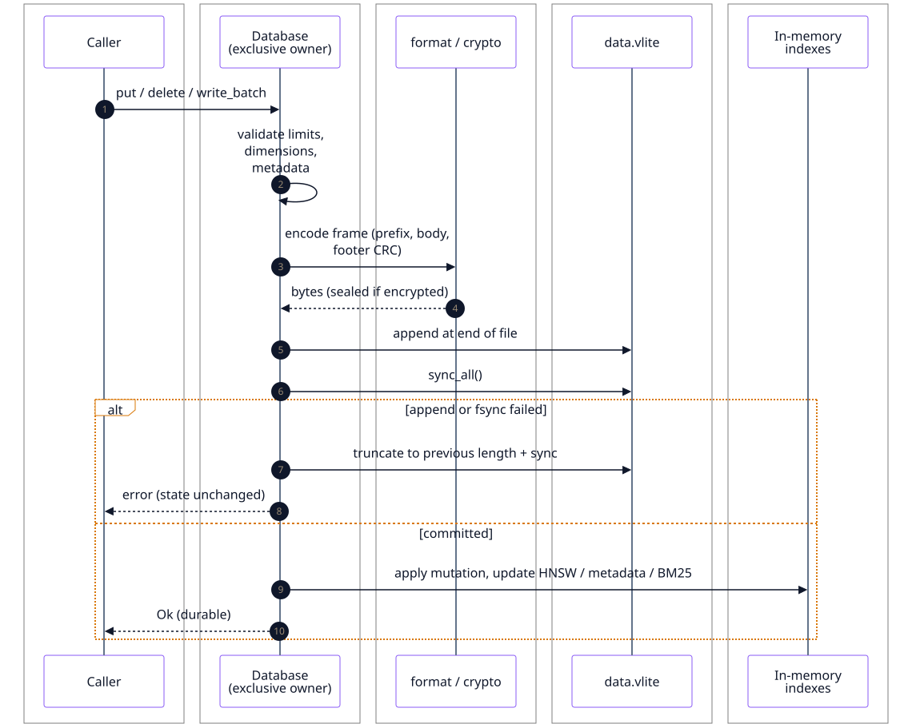

Text diagram
sequenceDiagram
autonumber
participant App as Caller
participant DB as Database (exclusive owner)
participant Enc as format / crypto
participant F as data.vlite
participant Idx as In-memory indexes
App->>DB: put / delete / write_batch
DB->>DB: validate limits, dimensions, metadata
DB->>Enc: encode frame (prefix, body, footer CRC)
Enc-->>DB: bytes (sealed if encrypted)
DB->>F: append at end of file
opt Durability::Full
DB->>F: sync_all()
end
alt append or fsync failed
DB->>F: truncate to previous length + sync
DB-->>App: error (state unchanged)
else committed
DB->>Idx: apply mutation, update HNSW / metadata / BM25
DB-->>App: Ok
end
Note over DB,F: Periodic (default): a flusher syncs within 60 s
Recovery
Opening a file replays the log. A corrupt file and a torn tail from a crash are separate errors. Neither is fixed silently: an explicit repair removes only the unacknowledged last frame.

Text diagram
flowchart TD
O["open(path)"] --> L{"try_lock()"}
L -- "held elsewhere" --> EL["Error::Locked"]
L -- "ok" --> H{"header magic,<br/>CRC, version, flags"}
H -- "bad" --> EC["Error::Corrupt"]
H -- "ok" --> N{"next frame"}
N -- "end of file" --> R["rebuild indexes<br/>load ANN snapshot if identity matches"]
N -- "fewer bytes than<br/>prefix / declared length" --> ET["Error::IncompleteTail<br/>(offset, bytes)"]
N -- "bad magic, CRC,<br/>sequence or semantics" --> EC
N -- "valid" --> AP["apply committed frame"] --> N
R --> RDY["ready"]
ET -. "explicit repair()" .-> TR["truncate torn tail"] --> O
Concurrency
One process owns a file for writing. Or several read-only processes share it while no writer has it open. The server runs reads in parallel and serializes writes.

Text diagram
flowchart LR
subgraph Clients
direction TB
H1["HTTP request"]
H2["HTTP request"]
G1["gRPC stream"]
end
Clients --> AUTH["bearer auth · scopes · rate limit"] --> MX["RwLock#lt;Database#gt;"]
MX -->|"shared guard"| READ["parallel read routes"]
MX -->|"exclusive guard"| WRITE["commits · rebuild / publish"]
READ --> CORE["one server-owned Database"]
WRITE --> CORE
CORE --> LK["exclusive OS file lock"] --> FILE[("data.vlite")]
MX -. "snapshot" .-> BG["background HNSW build"] -. "catch up + publish" .-> WRITE
subgraph Alternative["Alternative: writer closed"]
R1["reader process · open_read_only"] --> SH["shared OS file locks"]
R2["reader / MCP process · open_read_only"] --> SH
SH --> RF[("data.vlite · open-time snapshots")]
end
LK -. "mutually exclusive modes" .-> SH
Records
A record has a 64-bit ID, a full-precision vector, an optional payload, typed metadata and an optional expiry. Indexes are built from these records when the file opens.

Text diagram
flowchart LR ID["u64 record id"] --> V["dense f32 vector<br/>+ named / versioned vectors"] ID --> P["payload bytes ≤ 1 MiB"] ID --> MD["typed metadata<br/>int · float · string · bool · geo"] ID --> EX["expiry / revision"] MD --> MP["ordered metadata postings ≤ 16 indexes"] MD --> TP["BM25 postings ≤ 8 text fields"] V --> HG["HNSW graph"] V --> QC["ScalarU8 codes"]
On disk (op 4 body):
Vectors are always stored as full-precision f32, even when an index uses ScalarU8. Metadata is a field count, then fields sorted by name, each with a type tag: 1 string, 2 integer, 3 float, 4 boolean or 5 geo point (v5). Op 9 puts a 9-byte expiry (a flag and a time in milliseconds) before the same body, and op 8 replaces only the metadata.
Query planner
A search uses HNSW only when a ready index matches its metric and settings. Otherwise it scans exactly. Lower distance is always nearer, and ties resolve deterministically.

Text diagram
flowchart TD
Q["search(vector, k, filter)"] --> M{"metric"}
M -- "inner_product" --> EX["exact scan"]
M -- "squared_l2 / cosine" --> I{"ready HNSW with<br/>matching config, metric<br/>and quantization?"}
I -- "yes" --> ANN["HNSW traversal<br/>ef_search ≥ k"]
I -- "no" --> F{"filter uses<br/>metadata index?"}
F -- "yes" --> CS["exact scan over<br/>candidate ID set"]
F -- "no" --> EX
ANN --> RR["exact f32 rerank"]
CS --> TOP["top-k hits"]
EX --> TOP
RR --> TOP
HNSW and quantization
HNSW uses a seeded, deterministic level assignment. ScalarU8 shrinks vectors four times for traversal; final ranking uses the original vectors. See the traversal experiment.

Text diagram
flowchart LR R["f32 records"] -->|train per-dimension codebook| CB["ScalarU8 codes<br/>4× smaller"] Q["f32 query"] --> T["graph traversal<br/>asymmetric u8 distance"] CB --> T T --> C["candidates<br/>k × rerank multiplier"] C --> X["exact f32 distance"] R --> X X --> K["top-k"]
| Parameter | Default |
|---|---|
m | 16 |
ef_construction | 100 |
seed | 42 |
ef_search | Per query, at least k |
Hybrid search
Dense and BM25 text search run separately. Weighted reciprocal-rank fusion merges the two rankings.

Text diagram
flowchart LR Q["query"] --> D["dense leg<br/>planner → ranked ids"] Q --> T["text leg<br/>BM25 → ranked ids"] D --> F["weighted RRF<br/>Σ weight / (60 + rank)"] T --> F F --> K["fused top-k ≤ 1,000"]
Encryption and tenants
Optional encryption seals each frame body with ChaCha20-Poly1305, using a key derived from your passphrase with Argon2id. Frame headers stay readable so recovery still works. Encrypted databases refuse ANN files on disk, which would hold plaintext vectors. Tenants are logical namespaces in one file, not separate files or encryption domains.

Text diagram
flowchart LR
PW["passphrase"] -->|Argon2id| K["256-bit key"]
K --> S["seal frame body<br/>ChaCha20-Poly1305"]
S --> F[("data.vlite<br/>header + descriptor + sealed frames")]
F -. "plaintext sidecars refused" .-x DA[".ann · .dann"]
subgraph Tenancy["One file, logical tenants"]
T1["tenant A · docs"] --> N1["t#lt;hexA#gt;__docs"]
T2["tenant B · docs"] --> N2["t#lt;hexB#gt;__docs"]
end
Changes, restore and replicas
Change feeds, webhooks, replicas, backups and point-in-time restore all read the same committed frames.

Text diagram
flowchart LR
F[("committed frames<br/>seq 1..n")] --> CF["/v1/changes<br/>durable cursor · ≤ 10,000 events"]
F --> SEG["log segments<br/>whole commits · checksummed"]
SEG --> RF["ReplicaFollower"]
CF --> WH["webhooks<br/>at-least-once"]
F --> BK["backup"] --> PITR["restore to commit<br/>sequence or timestamp"]
Server
vlite-server owns one database. REST and gRPC share authentication, roles, rate limits and metrics. Remote access requires --allow-remote and authentication; TLS does not replace authentication.

Text diagram
flowchart LR
CL["client"] -->|"TLS 1.2/1.3 · rustls"| L{"listener"}
L -->|"/v1/..."| R["REST · Axum"]
L -->|"vlite.v1.VLite"| G["gRPC · tonic<br/>8 MiB messages"]
R --> A["bearer token<br/>role · scopes · tenant"]
G --> A
A --> RL["token-bucket<br/>rate limit"] --> DB["RwLock#lt;Database#gt;"]
A -.-> AU["audit.jsonl"]
DB -.-> OB["metrics: JSON · Prometheus<br/>OTLP traces"]
R -. "sanitized access events" .-> LOG["in-memory structured log ring<br/>--log-buffer · default 2000"]
LOG --> LG["GET /v1/admin/logs<br/>since · level · q · limit"]
OB --> SUM["GET /v1/admin/metrics/summary"]
LG --> UI["dashboard Observability<br/>cards · route table · live tail"]
SUM --> UI
Bindings
Python and Node.js call the engine through a handle-based C ABI. Closing the handle releases the file lock.
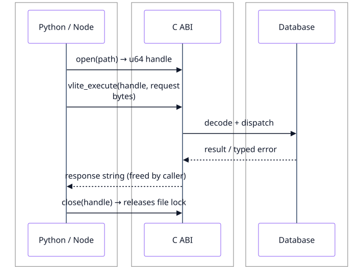

Text diagram
sequenceDiagram participant L as Python / Node participant C as C ABI participant D as Database L->>C: open(path) → u64 handle L->>C: vlite_execute(handle, request bytes) C->>D: decode + dispatch D-->>C: result / typed error C-->>L: response string (freed by caller) L->>C: close(handle) → releases file lock
Limits
| Item | Maximum |
|---|---|
| Dimensions | 65,536 |
| Payload | 1 MiB |
| Metadata | 64 fields, 64 KiB |
| Batch | 4,096 operations, 16 MiB |
| Frame body | 256 MiB |
| Collections | 64; names up to 63 bytes |
| Collection settings | 16 KiB |
| Metadata indexes | 16 |
| Text fields | 8 |
| Filter conditions | 64 |
| Hybrid results | 1,000 |
| Graphs | 64 per file; 4,096 entries and 16 MiB per frame |
| Tenants | 1,024 over the server's lifetime |
Limitations
- One writer per file. VLite is not a multi-writer database.
- Periodic sync can lose 60 s on OS crash; full fsyncs each commit, so batch writes.
- Opening a file replays the log, so open time and memory grow with data. Compaction reclaims space.
- HNSW and ScalarU8 are approximate. Inner product always searches exactly.
- Tenants are logical only. Webhooks are at-least-once, and streaming exports are not point-in-time snapshots.
- gRPC has no graph service.
More detail: Reference · Storage features · Security